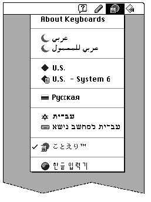

Legacy Document
Important: The information in this document is obsolete and should not be used for new development.
Important: The information in this document is obsolete and should not be used for new development.


Providing Menus and Icons
If you are writing a text service component, you can have it display its own menu, provide an icon for the title of that menu, and provide icons for the Keyboard menu.Providing a Text Service Component Menu
Although most user selections and configurations are best made with floating palettes, a text service component may put one menu into the menu bar. For input-method text service components, the menu cannot be hierarchical. Input-method menus appear on the right (system) side of the menu bar, between the Help menu and the Keyboard menu. Menus for non-input-method text service components appear on the left (application) side of the menu bar. See Figure 7-10 on page 7-40.To create the menu, follow the standard procedures as described in the Menu Manager chapter of Inside Macintosh: Macintosh Toolbox Essentials. The Text Services Manager installs the menu in the menu bar whenever your component is opened or activated. The application (through the Text Services Manager) passes the menu commands to you for handling when appropriate.
All instances of an input-method text service component must share one menu handle. Therefore, make sure to allocate the handle in the System heap. You can store the menu handle in your component's
refconfield. See the discussion of the Component ManagerSetComponentRefconroutine in Inside Macintosh: More Macintosh Toolbox.
Remember these limitations when considering an input-method menu: an input method can put up only one menu, the menu cannot be hierarchical, and the menu can be removed from the menu bar if there is insufficient room for it (on a small screen). It may be more appropriate to use palettes.
- IMPORTANT
- An input-method text service component should never dispose
of its menu handle in response to aTerminateTextService
call (see page 7-86). Any other kind of text service component
should always dispose of its menu handle in response to aTerminateTextServicecall.
- Using an icon for the menu title
- If you wish to have an icon instead of text as the title of your text service component menu, first create a small-icon suite (such as
'kcs#','kcs4', and'kcs8') to represent your menu title. Then, in your menu resource, make the menu title a 5-byte Pascal string (6 bytes total size), with this format:
Byte Value 0 $05 (length byte for menu string) 1 $01 (invalid character code) 2-5 Handle to icon suite 
- When the menu is created, the menu bar definition procedure knows from the values of the first 2 bytes that the final 4 bytes are a handle to an icon suite, and the procedure will put the icon in the menu bar. For more on creating icon suites and drawing icons, see the Finder Interface chapter of Inside Macintosh: Macintosh Toolbox Essentials. See also Macintosh Human Interface Guidelines for design suggestions for color icon families.
Providing Input Method Icons for the Keyboard Menu
Any text service component that provides an input method must supply the following keyboard icon resources to display an icon for the input method in the Keyboard menu:'kcs#','kcs4', and'kcs8'. The resource ID number of the keyboard icon resources must equal the script code of the script system that the input method supports. If your input method supports more than one script system, you can have more than one icon suite, each with the appropriate resource IDs.Figure 7-10 shows a Keyboard menu displaying a Japanese input method and a Korean input method, as well as keyboard layouts from several other script systems. The Japanese input method is active; its icon is checked in the menu and appears highlighted on the menu bar.
Figure 7-10 Input method icons in the Keyboard menu and menu bar
 The pencil icon between the Keyboard menu and the Help menu in Figure 7-10 is the title for the menu belonging to the active input method.
For more information on keyboard icon suites, see the appendix "Keyboard Resources" in this book. For information on script codes, see the chapter "Script Manager" in
this book.